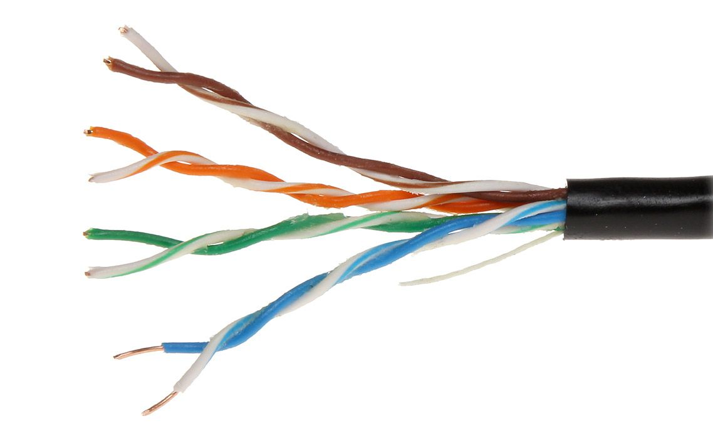
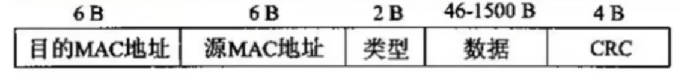
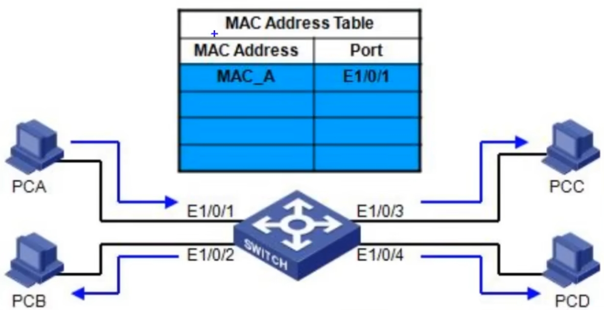
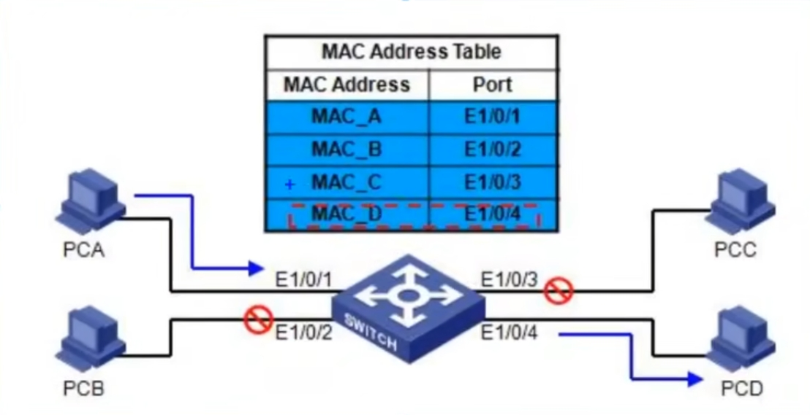
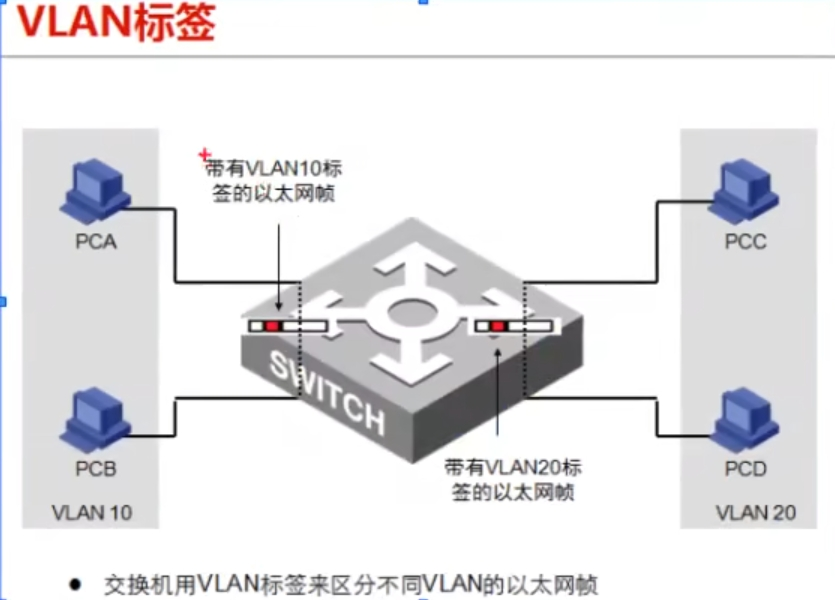
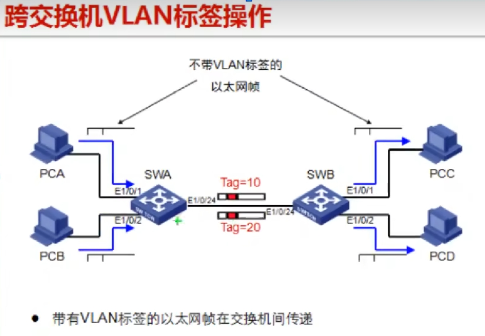
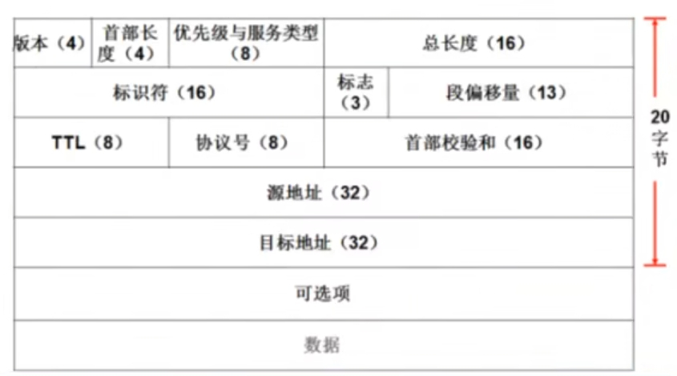
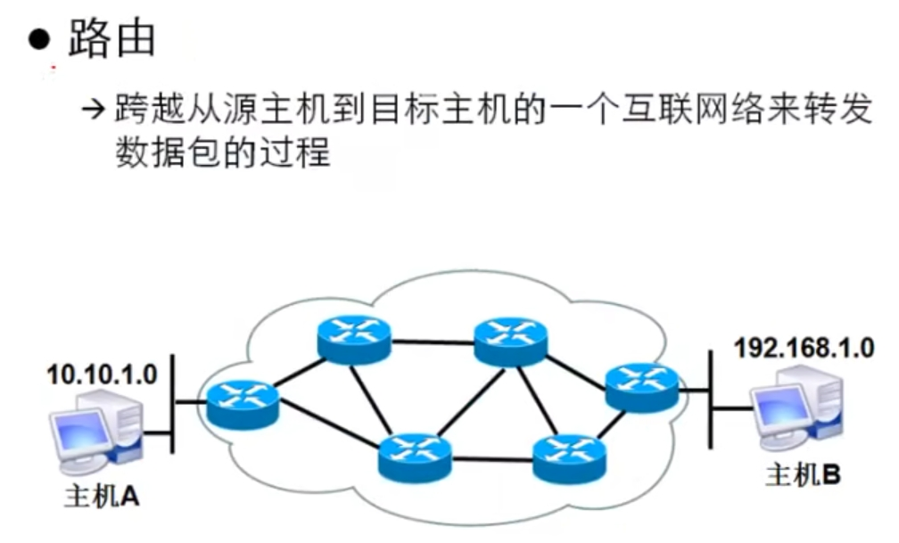
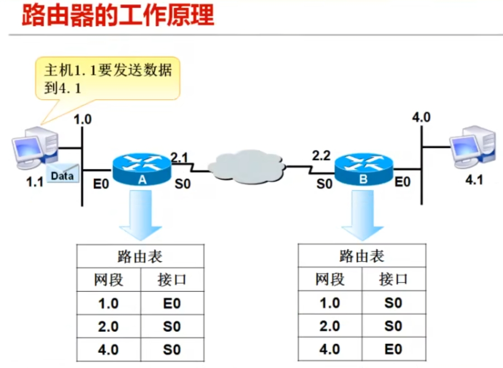
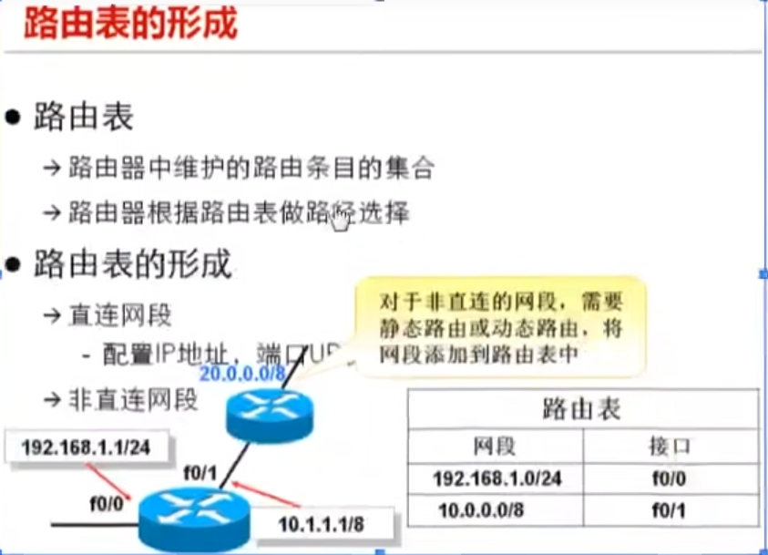

Linux常用命令（四）
网络管理
网络接口名称规则
- 网卡命名规则可以参考：Linux中网卡的命名规则，CentOS7网卡命名规则
- 网卡文件：/etc/sysconfig/network-scripts/ifcfg-enp0s3
- 网卡名称：enp0s3，有多少张网卡，就有多少个网卡文件
NetworkManager服务
- 网络管理器(NetworkManager)是一个动态网络的控制器与配置系统，它用于当网络设备可用时保持设备和连接开启并激活
- 默认centos7/RHEL7已安装网络管理器，并处于开启状态
- 网卡可以工作和这个程序有关
- systemctl status NetworkManager #网络的总程序
[root@localhost ~]# systemctl status NetworkManager
● NetworkManager.service - Network Manager
Loaded: loaded (/usr/lib/systemd/system/NetworkManager.service; enabled; vendor preset: enabled)
Active: active (running) since Wed 2024-04-10 13:53:46 CST; 1 weeks 1 days ago
Docs: man:NetworkManager(8)
Main PID: 715 (NetworkManager)
CGroup: /system.slice/NetworkManager.service
└─715 /usr/sbin/NetworkManager --no-daemon
Apr 10 13:53:47 localhost.localdomain NetworkManager[715]: <info> [1712728427.0311] d...)
Apr 10 13:53:47 localhost.localdomain NetworkManager[715]: <info> [1712728427.0317] d...)
Apr 10 13:53:47 localhost.localdomain NetworkManager[715]: <info> [1712728427.0323] d...)
Apr 10 13:53:47 localhost.localdomain NetworkManager[715]: <info> [1712728427.0326] m...L
Apr 10 13:53:47 localhost.localdomain NetworkManager[715]: <info> [1712728427.0487] m...E
Apr 10 13:53:47 localhost.localdomain NetworkManager[715]: <info> [1712728427.0488] p...S
Apr 10 13:53:47 localhost.localdomain NetworkManager[715]: <info> [1712728427.0529] d....
Apr 10 13:53:47 localhost.localdomain NetworkManager[715]: <info> [1712728427.0534] m...L
Apr 10 13:53:47 localhost.localdomain NetworkManager[715]: <info> [1712728427.0537] m...e
Apr 10 13:53:48 localhost.localdomain NetworkManager[715]: <info> [1712728428.3807] p...S
Hint: Some lines were ellipsized, use -l to show in full. - systemctl status network #网络的子程序
[root@localhost ~]# systemctl status network
● network.service - LSB: Bring up/down networking
Loaded: loaded (/etc/rc.d/init.d/network; bad; vendor preset: disabled)
Active: active (exited) since Wed 2024-04-10 13:53:47 CST; 1 weeks 1 days ago
Docs: man:systemd-sysv-generator(8)
Apr 10 13:53:47 localhost.localdomain systemd[1]: Starting LSB: Bring up/down networki....
Apr 10 13:53:47 localhost.localdomain network[860]: Bringing up loopback interface: [...]
Apr 10 13:53:47 localhost.localdomain network[860]: Bringing up interface enp0s3: [ ...]
Apr 10 13:53:47 localhost.localdomain systemd[1]: Started LSB: Bring up/down networking.
Hint: Some lines were ellipsized, use -l to show in full.
配置网络的工具
- 图形界面网络配置
- 命令行配置
- 配置文件：vim
- vim /etc/sysconfig/network-scripts/ifcfg-enp0s3
- 命令行：nmcli
- 如果没有可以安装：yum -y install NetworkManager
- 配置文件：vim
- 图形配置
- 简易图形：nmtui
- 图形界面：nm-connection-editor
配置网络参数
TYPE="Ethernet" |
查看ip地址
ip a |
主机名
主机名用来区别主机
- 查看主机名
hostname
[root@localhost ~]# hostname
localhost.localdomain
[root@localhost ~]# - 配置主机名
hostnamectl set-hostname master
- 查看和配置主机名
vim /etc/hostname
master
网络测试工具
- 测试工具
ip a #查看ip
ip route #查看路由，查看网关
ip neigh #查看邻居
ping 网址 #查看这个网址通不通 ping(Packet Internet Groper)，因特网包探索
ping 127.0.0.1 #ping自己 - 端口和服务port 就是端口号，端口号用于区分进程，端口号是唯一的从：0-65535
ss -tnl #展示TCP的套接字，show TCP socket，ss #查看网络状态，t表示TCP，n表示数字，l表示列出来
[root@localhost ~]# ss -tnl
State Recv-Q Send-Q Local Address:Port Peer Address:Port
LISTEN 0 128 *:22 *:*
LISTEN 0 100 127.0.0.1:25 *:*
LISTEN 0 128 [::]:22 [::]:*
LISTEN 0 100 [::1]:25 [::]:*
初始化服务器
关闭selinux 防火墙 |
通信模型
OSI模型
- 简介
- OSI：Open System Interconnection 开放系统互联模型
- 开放式系统互联
- 国际标准化组织(ISO)制定
- 定义了不同计算机互联的标准
- 设计和描述计算机网络通信的框架
- 全世界网络通信工作分为7层
- 制定OSI的优势
- 开放
- 厂商兼容
- 易于理解和学习
- 模块化工程
- 故障排除
- OSI7层次结构/功能
- 应用层：应用程序，如qq，微信，爱奇艺，由应用程序产生原始数据
- 表示层：对原始数据采用什么格式，压缩，加密，对数据进行安全快速传递
- 会话层：会话，全双工/半双工通信，双工指得是双方通信，全双工通信例如电话，两边都可以同时通信。半双工指得是同时只能一方传递信息，如对讲机。同时关注会话信息，如身份信息
- 传输层：/分段/重组/端口号，提升传输效率。分段指得是把数据拆成一段一段的，重组指得是将分段的数据按顺序重新组合，确定端口号。
- 网络层：IP地址/寻址/路由，为数据加上IP地址，寻址路由，指引数据的传递方向
- 数据链路层：MAC地址/局域网，加上MAC地址，负责局域网的数据传递
- 物理层：传输介质/比特流，利用电流/光/无线信号等进行传输
- 记忆的方式：应聘者的表格会传到您的树屋里，应表会传网数物
- TCO/IP5层结构/功能
- 应用层：应用层，表示层和会话层组合在一起
- 应用程序，如qq，微信，爱奇艺，由应用程序产生原始数据
- 对原始数据采用什么格式，压缩，加密，对数据进行安全快速传递
- 会话，全双工/半双工通信，双工指得是双方通信，全双工通信例如电话，两边都可以同时通信。半双工指得是同时只能一方传递信息，如对讲机。同时关注会话信息，如身份信息
- 传输层：/分段/重组/端口号，提升传输效率。分段指得是把数据拆成一段一段的，重组指得是将分段的数据按顺序重新组合，确定端口号。
- 网络层：IP地址/寻址/路由，为数据加上IP地址，寻址路由，指引数据的传递方向
- 数据链路层：MAC地址/局域网，加上MAC地址，负责局域网的数据传递
- 物理层：传输介质/比特流，利用电流/光/无线信号等进行传输
- 应用层：应用层，表示层和会话层组合在一起
- TCO/IP4层结构/功能
- 应用层：应用层，表示层和会话层组合在一起
- 应用程序，如qq，微信，爱奇艺，由应用程序产生原始数据
- 对原始数据采用什么格式，压缩，加密，对数据进行安全快速传递
- 会话，全双工/半双工通信，双工指得是双方通信，全双工通信例如电话，两边都可以同时通信。半双工指得是同时只能一方传递信息，如对讲机。同时关注会话信息，如身份信息
- 传输层：/分段/重组/端口号，提升传输效率。分段指得是把数据拆成一段一段的，重组指得是将分段的数据按顺序重新组合，确定端口号。
- 网络层：IP地址/寻址/路由，为数据加上IP地址，寻址路由，指引数据的传递方向
- 网络接口层：数据链路层和物理层结合在一起
- MAC地址/局域网，加上MAC地址，负责局域网的数据传递
- 传输介质/比特流，利用电流/光/无线信号等进行传输
- 应用层：应用层，表示层和会话层组合在一起
- OSI模型和TCP/IP模型的区别
- OSI
- 推出时间早
- 只有理论，没有实践
- TCP/IP
- TCP/IP：传输控制协议/互联网协议(Tranmission Control Protocol/Internet Protocol)
- 美国军方由时间，总结出来的理论
- 当今通信的标准
- OSI
- TCP/IP数据单元/data unit(DU)
- 应用层数据：应用数据单元，APDU：Application Protocol Data Unit，应用协议数据单元
- 传输层数据：segment DU 分段数据
- 网络层数据：package DU 包数据
- 数据链路层数据：frame DU 帧数据
- 物理层数据：bit DU 比特数据
- 封装和解封装
- 数据通过网络进行传输，在发送端从高处一层一层向下发送，如果一个主机要传输数据到别的主机，先把数据装到一个特殊协议报头中，这个过程叫封装。
- 简介：
- 信息从一台计算机产生，经过TCP/IP模型嘉庚。后传输到另一台计算机
- 这个通信过程就像，快递从厂家包装到顾客收到货物拆包一样
- 我们把这个通信过程，称作数据的封装（发送）和数据解封装（接收）。
- 应用层：应用层，表示层和会话层组合在一起
- 应用程序，如qq，微信，爱奇艺，由应用程序产生原始数据
- 对原始数据采用什么格式，压缩，加密，对数据进行安全快速传递
- 会话，全双工/半双工通信，双工指得是双方通信，全双工通信例如电话，两边都可以同时通信。半双工指得是同时只能一方传递信息，如对讲机。同时关注会话信息，如身份信息
- 传输层：/分段/重组/端口号，提升传输效率。分段指得是把数据拆成一段一段的，重组指得是将分段的数据按顺序重新组合，确定端口号。
- 网络层：IP地址/寻址/路由，为数据加上IP地址，寻址路由，指引数据的传递方向
- 数据链路层：MAC地址/局域网，加上MAC地址，负责局域网的数据传递
- 物理层：传输介质/比特流，利用电流/光/无线信号等进行传输
- 数据封装的过程大致如下
- （应用层）用户信息转换为数据，以便在网络上传输
- （传输层）数据转换为数据段，并在发送方和接收方主机之间建立一条可靠的连接
- （网络层）数据段转化为数据包或者数据报，并在报头上放上逻辑地址，这样每一个数据包都可以通过互联网进行传输
- （数据链路层）数据包或数据报转化为数据帧，以便在本地网络中传输。在本地网段上，使用硬件地址唯一标识每台主机
- （物理层）：数据帧转化为比特列，并采用数字编码和时钟方案进行传输
TCP/IP协议族
- TCP/IP简介
- TCP/IP：传输控制协议/互联网协议(Tranmission Control Protocol/Internet Protocol)
- 5层模型协议分类
- 应用层
- HTTP：超文本传输协议/网站，如淘宝
- Telnet：远程连接协议/远程控制，如QQ远程桌面
- FTP：文件传输协议，如电影天堂
- SMTP：简单邮件传输协议/Email，如QQ邮箱
- DNS：域名服务/WWW，如baiyun.com
- 传输层
- TCP/传输控制协议/可靠
- UDP/用户数据报协议/不可靠
- 网络层
- IP/互联网协议/寻址
- ICMP/网络消息管理协议
- 数据链路层
- MAC
- 物理层
- 网线
- 光纤
- 应用层
单位转换
- 比特=bit=b=1/0
- 字节=byte=B=8bit
- 1KB=1024B
- 1MB=1024KB
- 1GB=1024MB
- 1TB=1024GB
物理层
- 信号
- 模拟信号：不断变换的物理量，适用于电话网络
- 数字信号：量子恒定的物理量，高电压低电压之类的，适用于计算机网络
- 优点：抗噪声和抗衰减比较强
- 介质
双绞线(EIA/TIA568标准)
- 外形：八根线芯，两两互绞
- 功能分类
- 屏蔽型：网线的塑料由金属网包裹
- 非屏蔽型：网线只用塑料包裹
- 速率分类
- cat 5 /5类线：10M-100M
- cat 5e /超五类线：10M-100M
- cat 6
- 接口
- RJ45/水晶头，如上图
- 线序：EIA/TIA568B，橙白，橙，绿白，蓝，蓝白，绿，棕白，棕
光纤
- 多模/单模
- 纤芯粗/纤芯细
- 低速/高速
- 近/远
- 便宜/贵
- FC/ST/LC接口
数据链路层
- 功能：负责局域网的数据传递
- 地址
- MAC地址：Media Access Control Address，媒体访问控制地址，MAC地址也叫物理地址、硬件地址，由网络设备制造商生产时烧录在网卡。
- 48位二进制数或者12位16进制数
- 示例
- 08:00:27:47:34:99
- 前六位是厂商标识
- 后六位是硬件标识
- 帧封装
- 帧的组成：目标MAC//源地址//类型//数据//CRC，CRC是循环冗余校验和，用于数据校验
- 交换机工作原理
- 学习/广播/转发/更新
- 学习：如上图在交换机中存在一个MAC地址表，绑定每台电脑的MAC地址和交换机的端口，当我们用一个新的交换机刚把电脑连上，这时交换机中的MAC地址表是空的。考虑这时PCA向PCD发送消息，交换机会把PCA的MAC地址和对应的端口号填进MAC地址表中，然后向除了PCA的端口进行广播，PCB和PCC会把广播信息丢弃，PCD会收到信息，然后PCD向PCA发送消息，MAC地址表记录PCD和对应的端口号，交换机通过MAC地址表向PCA传递消息，至此MAC地址表中就有了PCA和PCD的MAC地址和端口号。
- 转发：当PCA再次向PCD发送消息时，交换机通过查MAC地址表直接转发消息给PCD，其他设备就不会收到信息了，如下图。
- 更新：MAC地址表中的每一条信息都存在失效时间，如果一段时间内表中的某条信息没有更新，该条信息就会清除，然后重新记录新的信息。
- 学习/广播/转发/更新

- VLAN
- 简介：Virtual Local Area Network (虚拟局域网)
- 功能：通过软件，将连接在同一台交换机上的客户机划分在不同的局域网下，同一VLAN下的设备可以互相通信，不同VLAN下的设备不能通信，如下图所示，PCA和PCB在VLAN10，PCC和PCD在VLAN20，交换机默认所有的端口都位于VLAN1，同时VLAN0也被系统征用，因此VLAN需要从VLAN2开始设置。

- TRUNK
- 简介：干道
- 场景：我有两台交换机，A交换机有VLAN10和VLAN20，B交换机也有VLAN10和VLAN20，我现在需要将A,B交换机连接起来，使得VLAN10可以互相通信，VLAN20可以互相通信，注意交换机的端口默认都在VLAN1，这个时候可以使用两条线来解决问题，但是如果VLAN越来越多，那就不可行了，那怎么样才可以用一条线解决这个问题呢？这就需要TRUNK技术。
- 功能：在一条线缆上传递多个VLAN信息，在线路的两端的交换机配置TRUNK。
- 原理：TRUNK技术为信息打上VLAN标签，当A交换机的VLAN10要向B交换机的VLAN10发消息时，TRUNK技术会在给信息打上VLAN10标签，这时传到B交换机，那么B交换机就只会发给VLAN10的主机，主机收到的信息都是不带VLAN标签的，接口会去除VLAN标签。VLAN标签只存在于TRUNK线路，TRUNK线路不属于任何VLAN。
- 总结：
- 交换机接口模式分为access和trunk。
- access是指定接口连接的是主机，访问某个VLAN。
- trunk是指定接口连接的是交换机，需要通过多个VLAN的数据，承载多个VLAN。

网络层
目的：分割广播域，便于寻址。
IP地址
- 简介
- 32位二进制数
- IP用于主机在互联网中的标记
- 4组十进制表示
- IP地址每八位为一组，用.进行分割，用十进制标识
- 192.168.0.1
- 分类：用第一组进行分类
- A类(1~126)
- B类(128~191)
- C类(192~223)
- D类(224~239) 组播
- E类(240~255) 科研
- 127：回环地址，每个计算机上都有这个地址，查看自己的ip通信有没有用，用于测试本机。
- 私有IP分类
- 简介：由于IP地址有限，所以会在路由器的出网口/进网口设置一个公共IP也就是上面所用到的IP，中国是使用的上述C类IP，然后在家庭或者企业内部使用私有IP，有可能两个人会出现私有IP相同的情况，当我们要和外界通信时，会把私有IP换成公有IP地址和外界通信，也就是说很多人会公用一个公有IP，公有IP不能相同，举个形象的比喻，把IP比作一双鞋，在家庭或公司内部我们每个人都穿自己的鞋，然后要从家里出去或者出去公司，去外部就需要换上公共的鞋，想想都觉得，不可描述，不可描述。
- 私有IP也有分类：
- A类：10.0.0.0~10.255.255.255
- B类：172.16.0.0~172.31.255.255
- C类：192.168.0.0~192.168.255.255
- 除了上述私有IP地址，其他IP地址就是公有IP地址，公有IP地址可以售卖。
- 简介
子网掩码
- 作用：运算出IP地址的网络部分和主机号，和IP地址等长，与IP地址同时出现，相同网段的主机可以互相通信，一定要配子网掩码。
- 分类：
- A类：255.0.0.0
- B类：255.255.0.0
- C类：255.255.255.0
- 方法：
- IP地址与子网掩码按位做逻辑与得到网段
- 更多的关于IP和子网掩码的信息参考：一篇全文让你彻底理清IP地址、子网掩码、网关
- IP地址的可用范围
- 同一网段第一个IP地址不可用，其作用是区分网段
- 同一网段最后一个IP地址不可用，其作用是用来广播
- 以172.168.1.0/24网段为例：总数有256个，从172.168.1.0~172.168.1.255，可用IP为254，其中172.168.1.0为网段，172.168.1.255为广播地址。一般会把同一网段的第二个地址，在这里是172.168.1.1设为网关的地址，也就是路由器的IP地址，倒数第二个IP也别用，在这里是172.168.0.254。
- 相同网段的主机可以互相通信
- 不相同网段的主机不能互相通信
- C类地址最多只能用254个IP，如果需要更多的IP，可以改子网掩码，也可以使用B类地址，约65535个地址。
网络层封装
- IP数据包的格式：数据前有20个字节
 - 计算发现，访问的地址是同一网段，直接给相应的交换机
- 计算发现，访问的地址是其他网段，把这个数据包丢给网关（路由器）
- IP数据包的格式：数据前有20个字节
网关 ：计算发现，访问的地址是其他网段，把这个数据包丢给网关，网关会把数据包传出去
路由器的工作原理
- 不同网络通信有路由器（分割网络，连接不同的网络）
- 功能：路由寻址，主机A有多条路径到主机B，所谓条条大路通罗马
 - 工作原理：路由器存着路由表，路由器只看网段，不看IP地址，根据网段和自身的接口进行跳转。
 - 路由表的形成
- 直连网段：为路由器的接口配上IP，就会自动形成一个直连网段路由，一个接口管理一个网段，如上图
- 非直连网段：自己配置非直连网段，静态路由配置
网络测试工具
检查网络是否通畅ping命令ping www.baidu.com
ping -c 3 www.baidu.com #发送和收回3个包
ping -f www.baidu.com #极限ping
ping -i 0.01 www.baidu.com #间隔0.01秒ping，可以ping的很快
ping -q www.baidu.com #静默ping
ping -i 0.01 -c 1000 www.baidu.com #发1000个包，每隔0.01秒发送traceroute命令可以查看主机到互联网中的一台主机走什么样的路径，排查故障
traceroute [参数] [主机]
traceroute www.baidu.com
traceroute -m 10 www.baidu.com #只跳10次
traceroute -n www.baidu.com #显示IP，不查主机名
traceroute -q 4 www.baidu.com #发送4个包
参考
本博客所有文章除特别声明外，均采用 CC BY-NC-SA 4.0 许可协议。转载请注明来自 哆啦酱的点心屋！
相关推荐


评论